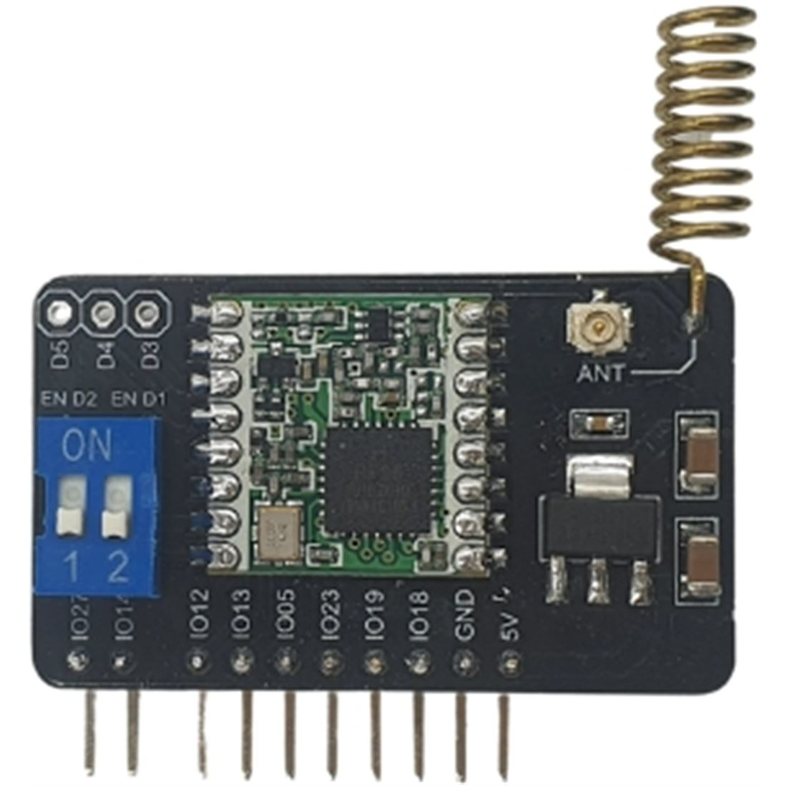

Módulo Lora - LoRaWan. Comunicaciones LoRa
Los módulos LoRa pueden enviar y recibir señales LoRa (LongRange). LoRa es una tecnología de comunicación patentada, que está pensada para comunicaciones con un bajo consumo de energía, largo alcance y buena inmunidad frente al ruido, lo que la hace ideal para aplicaciones IoT.
